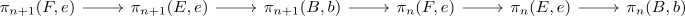
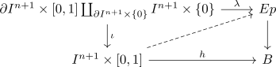

long exact sequence of a serre fibration
Proposition
Let $p: E \rightarrow B$ be a serre fibration, $b \in B$ and $e \in p^{-1}(b) \coloneqq F$ a fibre. Then there exists natural boundary maps
\begin{align*}
\partial: \pi_{n+1}(B,b) \rightarrow \pi_n(F,e)
\end{align*}
such that

is exact for $n \geq 0$:
see also:
- exact sequence of sets, where the base point of $\pi_0(B,b)$ is given by the path component of $b$
Proof
definition
group action of a serre fibration set theoretic group action defines group homomorphism
exactness at $\pi_{n+1}$
note that
\begin{align*}
p_* \circ \iota_*
\end{align*}
is trivial
Suppose
\begin{align*}
\lambda: I^{n+1}, \partial I^{n+1} \rightarrow (E,e)
\end{align*}
satisfies
\begin{align*}
p \lambda \simeq_{\partial I^{-b%} c_b
\end{align*}
then

Then $\overline{h}_1$ defines an element in $\pi_{n+1}(F,e)$ such that
\begin{align*}
\iota_*[\overline{h}_1] = [ \lambda]
\end{align*}
exactness at $\pi_{n+1}(B,b)$
Let $(\lambda: I^{n+1}, \partial I^{n+1}) \rightarrow (E,{)
We want to show that
\begin{align*}
\partial p_*[\lambda]
\end{align*}
is trivial
Then $\lambda$ itself solves the lifting problem defining
\begin{align*}
\lambda p_*[\lambda]
\end{align*}
therefore
\begin{align*}
\partial p_*[\lambda] = [\lambda_{I^n \times \{1\}}] = 1 \in \pi_n(F,e)
\end{align*}
Let
\begin{align*}
\varphi: (I^n, \partial I^n) \rightarrow (F,e)
\end{align*}
be such that
\begin{align*}
\varphi \simeq_{\partial I^n} c_e
\end{align*}
in $E$
Then
\begin{align*}
[ph]
\end{align*}
is a preimage of [$\varphi]$ under $\partial$
exactness at $\pi_n(F,e)$
- similar